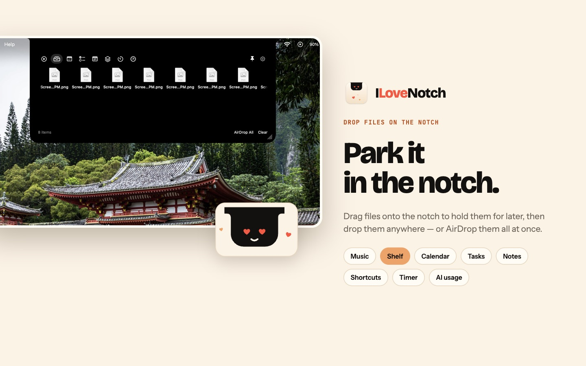
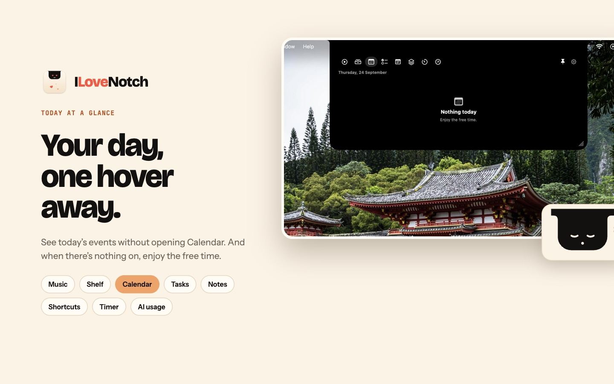
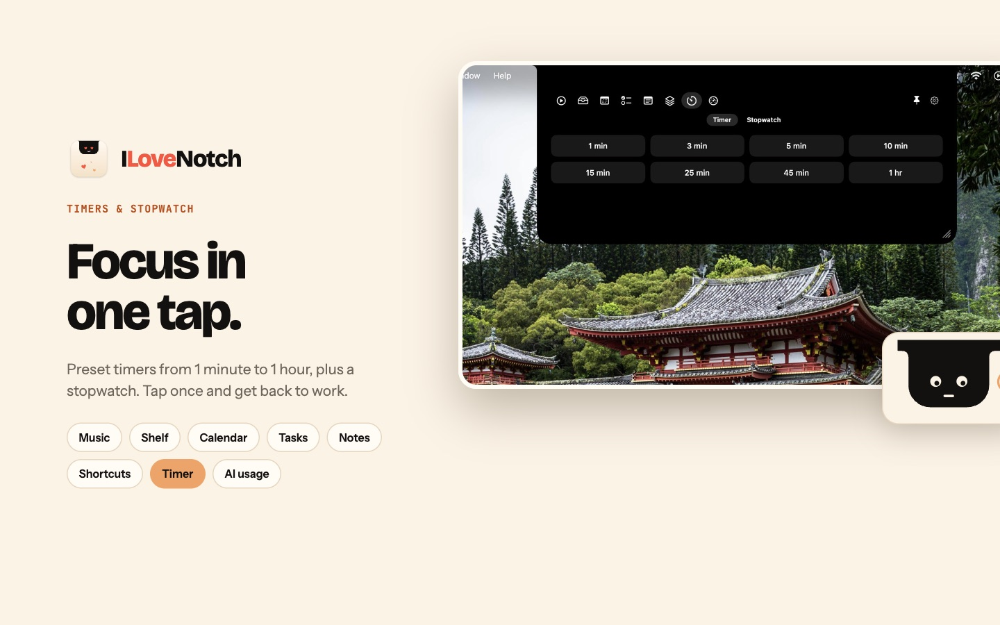
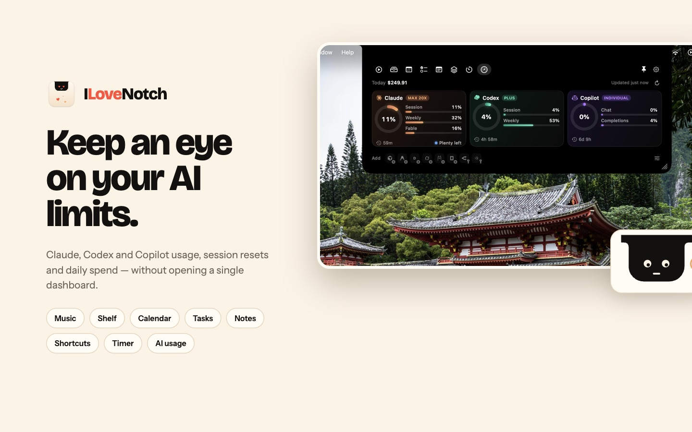

Free · Open source · Native macOS
Your notch,
finally useful.
Now playing from any app, a file shelf with AirDrop, today's calendar, Reminders, notes, Shortcuts and timers, right in the notch.
brew install --cask niyamvora/tap/ilovenotch
macOS 14.6 or later · Signed and notarized by Apple · Updates itself · Mac App Store edition on TestFlight



Coming from NotchNook?
Its license server went offline in September 2026 and paid licenses stopped working. ILoveNotch has no license, account or server to lose, and it's MIT licensed, so the code stays public.
Light on battery
Event-driven with no polling timers, so it idles near 0% CPU and hidden tabs cost nothing. Performance budgets are checked in CI.
Private by default
No accounts, analytics or tracking. Your notes, settings and shelf stay on your Mac. Privacy policy
Every display
On screens without a notch, like an external monitor, it sits as a small floating pill at the top edge.
What's in the notch
- Media. What's playing in any app, with artwork, controls, a seek bar and a waveform that moves with the music.
- Shelf. Drop files on the notch, then drag them out, Quick Look them or AirDrop them.
- Calendar and Tasks. Today's events, and your Apple Reminders, synced to your iPhone through iCloud.
- Notes, Shortcuts, Timer. Notes that save as you type, your shortcuts one click away, a timer and a stopwatch.
- Mirror. Your camera, off until you turn it on, and on only while its tab is open.
- AI Usage. Your Claude, Codex, Cursor, Copilot and other plan limits with reset countdowns (GitHub build).
